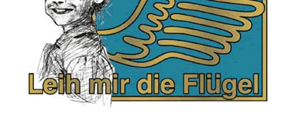

★にこにこ☆イラストレーション★&★レフトハンデッ★
←☆IEでご覧の方はスクロールバーが左です。左マウスでどうぞ！ ←☆Enjoy left hand scroll bar in IE(browser)!
★にこにこ☆イラストレーション★Nikoniko☆Illustrations★
☆左手描きイラストのページ☆ left-handed illustrator's page ☆
 |
|  |

｜宿曜占星術・占いポータル・誕生日の占いプレゼント・大恋愛占い｜
｜javascriptボタン作例｜ gifバナー作例1｜ gifバナー作例2｜
★印刷物作品見本★
｜国際知財団体パンフレット｜ 特許図面作例｜ ポスター作例｜ セミナーチラシ作例｜
★カフェ:レフトハンデッ☆Cafe:Lefthanded★
|
世界には、レオナルド・ダ・ヴィンチとか オバマ元大統領とか、ステキな左利きが綺羅星のごとくいます。 There is a galaxy of brilliant left-handed celebrities such as Leonardo da Vinci, American president Obama etc.. |
||
|
そこで友達とこんなお店始めてみました。 "カフェ:レフトハンデッ"！ 可愛い左利きグッズの見つかるお店です。 みんなで右脳活性化してしまいましょう。 もちろん右利きの方もどうぞ。 左利きになれるチャンスです！ |
Here it is a left-handed goods shop! Would you care for something activate your right brain? Welcome to "Cefe:Lefthanded" ! (Only Japanese site, so far) We 'll launch a cafe for the lefthanded in Tokyo. |
|